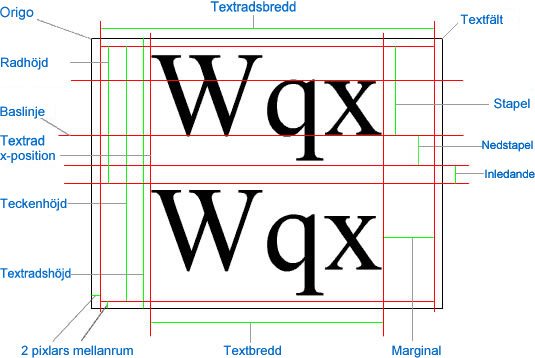

| Paket | flash.text |
| Klass | public class TextLineMetrics |
| Arv | TextLineMetrics |
| Språkversion: | ActionScript 3.0 |
| Körningsmiljöversioner: | AIR 1.0, Flash Player 9, Flash Lite 4 |
flash.text.TextField.getLineMetrics().
I flash.text.TextField finns information om mått för de textfält där textraden finns (exempelvis "textfältshöjd" i diagrammet).
I följande diagram visas punkter och mått i ett textfält och den textrad som finns i fältet:

Relaterade API-element
 Dölj ärvda publika egenskaper
Dölj ärvda publika egenskaper Visa ärvda publika egenskaper
Visa ärvda publika egenskaper| Egenskap | Definieras med | ||
|---|---|---|---|
| ascent : Number
Värdet ascent för texten är hur långt det är från baslinjen till toppen av raden, i pixlar. | TextLineMetrics | ||
 | constructor : Object
En referens till klassobjektet eller konstruktorfunktionen för en given objektinstans. | Object | |
| descent : Number
Värdet descent för texten är hur långt det är från baslinjen till botten av raden, i pixlar. | TextLineMetrics | ||
| height : Number
Värdet height är höjden på texten på de valda raderna (inte nödvändigtvis hela texten) i pixlar. | TextLineMetrics | ||
| leading : Number
Värdet leading är det vertikala avståndet mellan textraderna. | TextLineMetrics | ||
| width : Number
Värdet width är bredden på texten på de valda raderna (inte nödvändigtvis hela texten) i pixlar. | TextLineMetrics | ||
| x : Number
Värdet x är vänsterpositionen för det första tecknet i pixlar. | TextLineMetrics | ||
| Metod | Definieras med | ||
|---|---|---|---|
TextLineMetrics(x:Number, width:Number, height:Number, ascent:Number, descent:Number, leading:Number)
Skapar ett TextLineMetrics-objekt. | TextLineMetrics | ||
|
Anger om det finns en egenskap angiven för ett objekt. | Object | |
|
Anger om en instans av klassen Object finns i prototypkedjan för objektet som anges som parameter. | Object | |
|
Anger om den angivna egenskapen finns och är uppräkningsbar. | Object | |
|
Anger tillgänglighet för en dynamisk egenskap för slingåtgärder. | Object | |
|
Returnerar det här objektets strängrepresentation, formaterad i enlighet med språkspecifika konventioner. | Object | |
|
Returnerar det angivna objektets strängbeteckning. | Object | |
|
Returnerar det angivna objektets primitiva värde. | Object | |
ascent | egenskap |
public var ascent:Number| Språkversion: | ActionScript 3.0 |
| Körningsmiljöversioner: | AIR 1.0, Flash Player 9, Flash Lite 4 |
Värdet ascent för texten är hur långt det är från baslinjen till toppen av raden, i pixlar. Se måttet för stapel i i översiktsdiagrammet för klassen.
Relaterade API-element
descent | egenskap |
public var descent:Number| Språkversion: | ActionScript 3.0 |
| Körningsmiljöversioner: | AIR 1.0, Flash Player 9, Flash Lite 4 |
Värdet descent för texten är hur långt det är från baslinjen till botten av raden, i pixlar. Se måttet för nedstapel i översiktsdiagrammet för klassen.
Relaterade API-element
height | egenskap |
public var height:Number| Språkversion: | ActionScript 3.0 |
| Körningsmiljöversioner: | AIR 1.0, Flash Player 9, Flash Lite 4 |
Värdet height är höjden på texten på de valda raderna (inte nödvändigtvis hela texten) i pixlar. Höjden på textraden omfattar inte höjden på mellanrummet. Se måttet för radhöjd i översiktsdiagrammet för klassen.
Relaterade API-element
leading | egenskap |
public var leading:Number| Språkversion: | ActionScript 3.0 |
| Körningsmiljöversioner: | AIR 1.0, Flash Player 9, Flash Lite 4 |
Värdet leading är det vertikala avståndet mellan textraderna. Se måttet för radavstånd i i översiktsdiagrammet för klassen.
Relaterade API-element
width | egenskap |
public var width:Number| Språkversion: | ActionScript 3.0 |
| Körningsmiljöversioner: | AIR 1.0, Flash Player 9, Flash Lite 4 |
Värdet width är bredden på texten på de valda raderna (inte nödvändigtvis hela texten) i pixlar. Bredden på textraden är inte detsamma som bredden på textfältet. Bredden på textraden anges i förhållande till bredden på textfältet, minus mellanrummet på 4 pixlar (2 pixlar på varje sida). Se måttet för textradsbredd i översiktsdiagrammet för klassen.
Relaterade API-element
x | egenskap |
public var x:Number| Språkversion: | ActionScript 3.0 |
| Körningsmiljöversioner: | AIR 1.0, Flash Player 9, Flash Lite 4 |
Värdet x är vänsterpositionen för det första tecknet i pixlar. Värdet omfattar marginalen, indraget (om sådant finns) och mellanrumsbredd. Se x-positionen för textraden i översiktsdiagrammet för klassen.
Relaterade API-element
TextLineMetrics | () | Konstruktor |
public function TextLineMetrics(x:Number, width:Number, height:Number, ascent:Number, descent:Number, leading:Number)| Språkversion: | ActionScript 3.0 |
| Körningsmiljöversioner: | AIR 1.0, Flash Player 9, Flash Lite 4 |
Skapar ett TextLineMetrics-objekt. Objektet TextLineMetrics innehåller information om textmåtten för en textrad i ett textfält. Objekt i den här klassen returneras av metoden flash.text.TextField.getLineMetrics().
Mer om egenskaperna i kontexten finns i diagrammet i klassöversikten.
Parametrarx:Number — Vänsterpositionen för det första tecknet i pixlar.
| |
width:Number — Bredden på texten på de valda raderna (inte nödvändigtvis hela texten) i pixlar.
| |
height:Number — Höjden på texten på de valda raderna (inte nödvändigtvis hela texten) i pixlar.
| |
ascent:Number — Längden från baslinjen till toppen av raden, i pixlar.
| |
descent:Number — Längden från baslinjen till botten av raden, i pixlar.
| |
leading:Number — Det vertikala avståndet mellan textraderna.
|
Relaterade API-element
- Skapa en egenskap med namnet
labelav TextField-typ. - Konstruktorn anropar
configureAssets(), som utför följande:- Anger justering av scenen längst upp till vänster och utan skala.
- Skapar ett nytt TextField-objekt med namnet
label. - Aktiverar bakgrunden för
labeloch ställer in färgen på vit. - Tillåter texten i
labelatt fortsätta på flera rader med automatisk radbrytning. - Kopplar resultatet av ett anrop till
getLabelText()tilltext-egenskapen ilabel. MetodengetLabelText()skapar en variabel av XML-typ och kopplar den till en XML-nod med namnetbodysom fylls i med en lång mening. - Lägger till
labeli visningslistan med hjälp avaddChild().
- En metod som lyssnar efter
resize-händelser som utförs på scenen läggs sedan till med namnetresizeHandler(). Varje gång storleken på Flash Player-fönstret ändras skickas enRESIZE-händelse och följande sker:draw()anropas för att säkerställa attlabelvisas i mitten av scenen och omges av en buffert på 10 pixlar.setTimeout()kör sedanshowMetrics()efter en kort fördröjning. Fördröjningen läggs till eftersom radmåtten inte uppdateras förränRESIZE-händelsen är utförd och scenen har ritats om fullständigt.showMetrics()kopplar en TextLineMetrics-variabel med namnetmetricstill resultatet av ett anrop tillgetLineMetrics(). Den här variabeln skickas sedan till en ny instans av en LineMetricsReader-instans med namnetreader. De två variablerna används sedan i anrop tilltrace()för att skriva ut den första (och enda) raden ilabeloch information från LineMetricsReader-instansen via desstoString()-metod.
- Konstruktorn tvingar en enstaka sändning av
resize-händelsen att tvingalabelatt ritas korrekt när SWF-filen först läses in.
package {
import flash.display.Sprite;
import flash.display.StageAlign;
import flash.display.StageScaleMode;
import flash.events.*;
import flash.text.TextField;
import flash.text.TextLineMetrics;
import flash.utils.setTimeout;
public class TextLineMetricsExample extends Sprite {
private var gutter:int = 10;
private var label:TextField;
public function TextLineMetricsExample() {
configureAssets();
configureListeners();
resizeHandler(new Event(Event.RESIZE));
}
private function showMetrics():void {
var metrics:TextLineMetrics = label.getLineMetrics(0);
var reader:LineMetricsReader = new LineMetricsReader(metrics);
trace("lineText: " + label.getLineText(0));
trace("metrics: " + reader);
}
private function configureAssets():void {
stage.align = StageAlign.TOP_LEFT;
stage.scaleMode = StageScaleMode.NO_SCALE;
label = new TextField();
label.background = true;
label.backgroundColor = 0xFFFFFF;
label.multiline = true;
label.wordWrap = true;
label.text = getLabelText();
addChild(label);
}
private function configureListeners():void {
stage.addEventListener(Event.RESIZE, resizeHandler);
}
private function resizeHandler(event:Event):void {
draw();
setTimeout(showMetrics, 100);
}
private function draw():void {
label.x = gutter;
label.y = gutter;
label.width = stage.stageWidth - (gutter * 2);
label.height = stage.stageHeight - (gutter * 2);
}
private function getLabelText():String {
var text:XML = <body>The Flex product line enables developers to build rich Internet applications that blend the responsiveness of desktop software, the cross-platform reach of the web, and the expressiveness of the Flash Platform.</body>
return text.toString();
}
}
}
import flash.text.TextLineMetrics;
class LineMetricsReader {
private var metrics:TextLineMetrics;
public function LineMetricsReader(metrics:TextLineMetrics) {
this.metrics = metrics;
}
public function toString():String {
return "[TextLineMetrics ascent:" + metrics.ascent
+ ", descent:" + metrics.descent
+ ", leading:" + metrics.leading
+ ", width:" + metrics.width
+ ", height:" + metrics.height
+ ", x:" + metrics.x
+ "]";
}
}
Tue Jun 12 2018, 01:40 PM Z